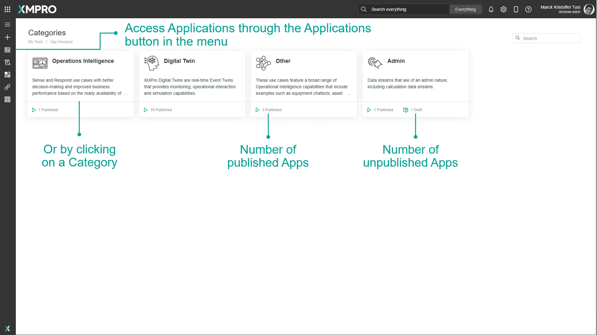
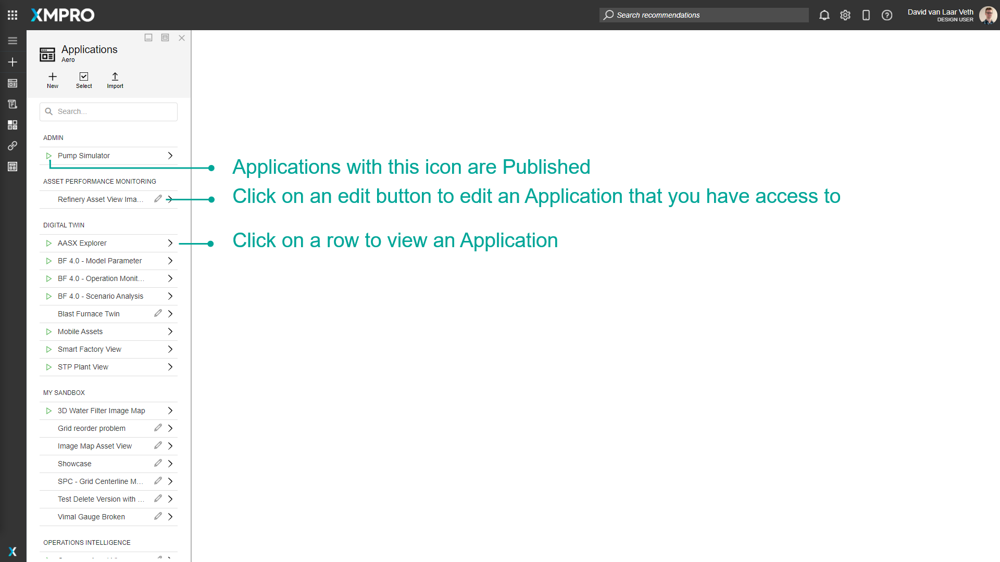
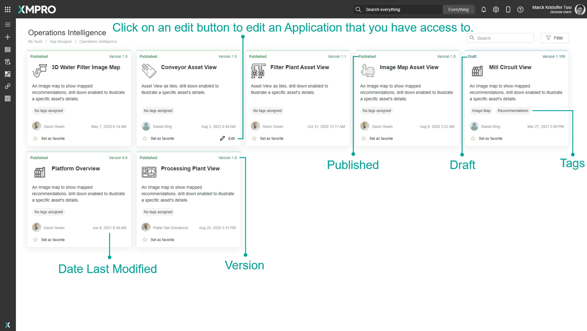
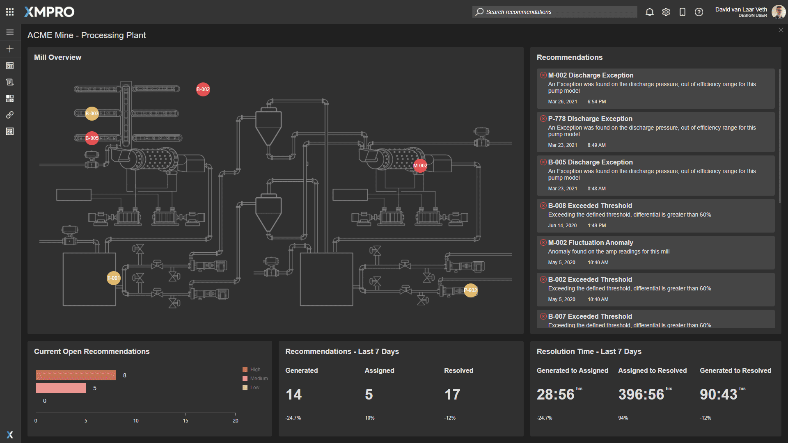
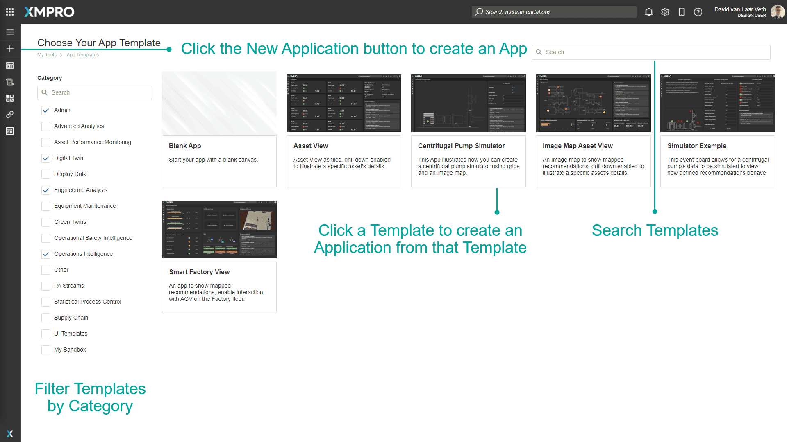
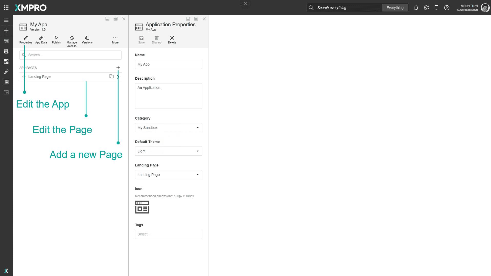
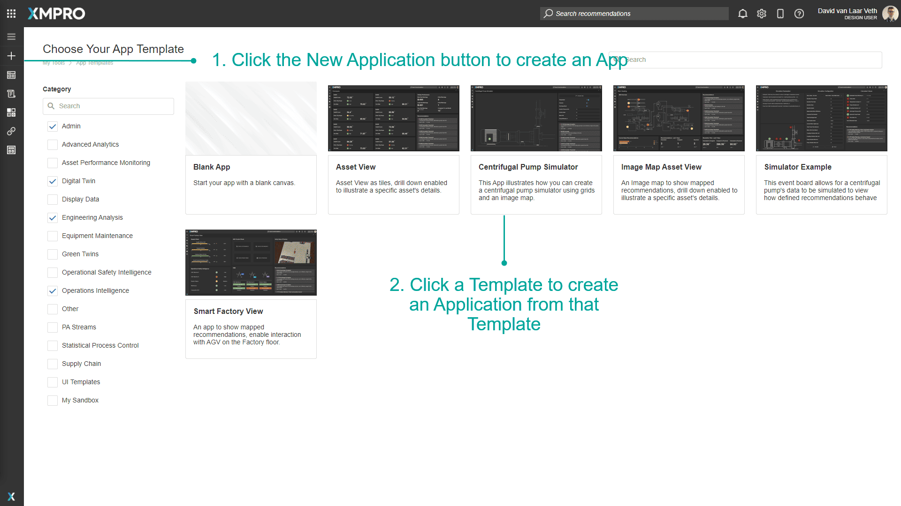
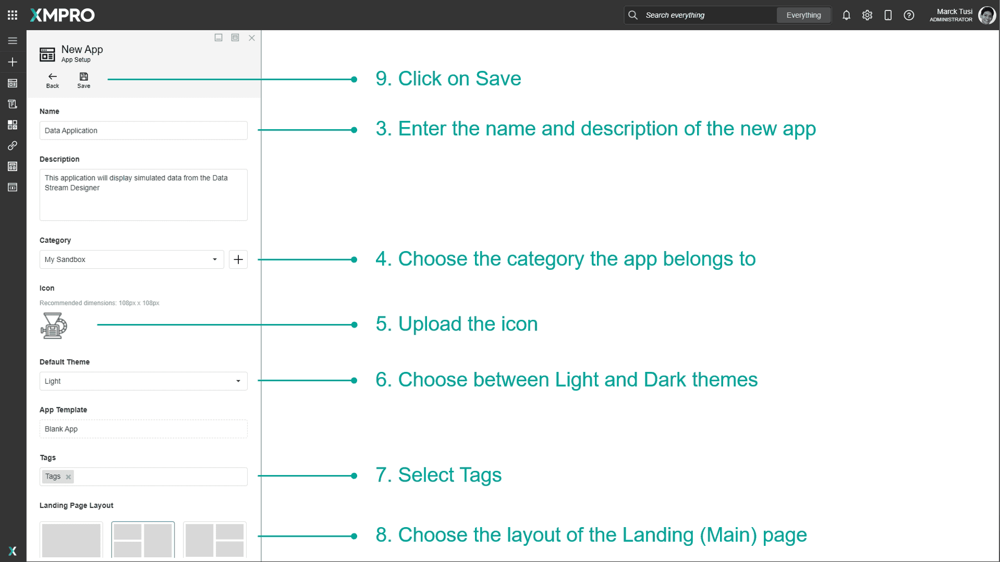
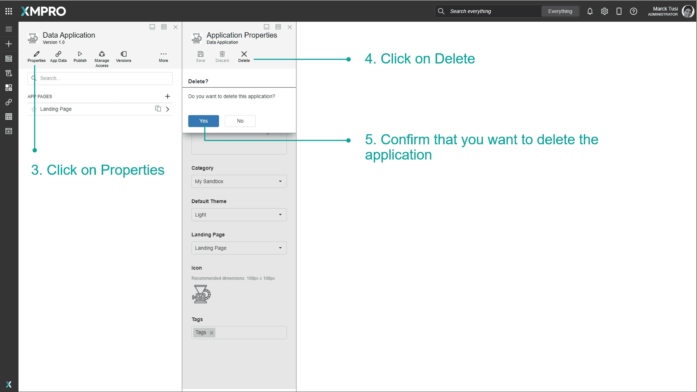
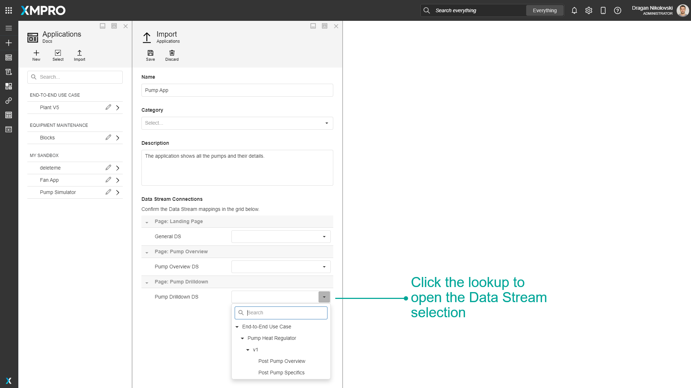

Manage Apps
An Application or App enables you to create Apps using a drag-and-drop canvas environment. This allows anyone including Engineers and subject matter experts to build an App in a matter of days or weeks without having to be a programmer.
Note
It is recommended that you read the article listed below to improve your understanding of Applications.
How To Manage Apps
Each card on the Categories dashboard shows the Name, Description, and Icon of the Category, as well as the number of Unpublished and Published Apps in the category.

Clicking on the Applications button in the menu will take you to the Applications list. The Applications list is grouped by Category. Apps that have the play icon are Published.
Click on a row to view an App, or click on an edit button to edit an App. The edit button will only be shown for Apps that you have edit access to.

Clicking on a Category on the App Designer Categories dashboard will take you to the Applications dashboard for that Category. Each card shows the Icon, Name, and Description of the App as well as how many users have access, the version, the time and date it was last modified, the owner's profile picture and name, and whether the App is Published - if so it will have "Active" in green, and if not it will have "Draft" in yellow.

Clicking a row on the Applications list or a card on the Applications dashboard will let you view the App. An example of an App can is shown below:

You can go back to the previous page by clicking the X button in the top right of the page. If you have edit access to the App there will also be an edit icon at the top right that you can click to edit the App.
You can create an App by clicking the New Application button in the left menu.

After navigating to the edit page for an Application, you can edit the properties and delete the App by clicking the Properties command button. You can also edit a page by clicking on it in the pages list or add a new page by clicking the plus button at the top right of the list of pages.

The App Pages list is ordered with the Landing Page at the top, and the rest of the pages in alphabetical order.
How to Create an App
To create an App, follow the steps below:
- Click the New Application button to create an App.
- Click a Template to create an Application from that Template.

- Enter the name and description of the new App.
- Choose the category the app belongs to.
- Upload the icon. Sample icons can be found in the Icon Library.
- Choose between Light and Dark themes.
- You may also include tags from the drop-down that opens when you click on the field - or type a new value and press Enter.
- Choose the layout of the Landing (Main) page.
- Click on Save.

How to Delete an App
To delete an App, follow the steps below:
- Open the applications page from the left-hand menu.
- Click on the edit button of the application you want to delete.
- Click on Properties.
- Click on Delete.
- Confirm that you want to delete the Application.

Versions of an App
To read more about managing the versions of an App, visit How To Manage Versions.
Importing, Exporting, and Cloning an App
To read more about exporting, importing, and cloning an App, visit How to Import, Export, and Clone.
Importing an App with Data Stream Connections
When importing an App with Data Stream Connections, there is an option to map all of the App's connections to their corresponding Data Stream version and Agent.
This step can be skipped during the import, but each App Page's data source will have to be updated individually.

Sharing Apps
To read more about sharing Apps and their managing access, visit How to Manage Access.
Further Reading
- How to Manage Templates
- How to Manage Pages
- How to Create and Maintain Notes
- How to Manage App Files
- How to Manage Themes
Last modified: July 24, 2025